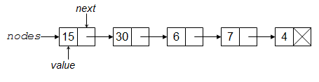

import time
## Read from CSV
t0 = time.time()
data_from_csv = pd.read_csv(os.path.join('..', 'data', 'airline.csv'))
print(time.time() - t0)0.8521711826324463References (see syllabus for links):
(Optional) Videos:
There are four videos from 2020 in the bCourses Media Gallery that you can use for reference if you want to:
Note that the videos were prepared for a version of the course that used R, so there are some differences from the content in the current version of the unit that reflect translating between R and Python. I’m not sure how helpful they’ll be, but they are available.
This unit largely covers topics relevant for early on in the data analysis pipeline: getting data, reading data in, writing data out to disk, and webscraping. We’ll focus on doing these manipulations in Python, but the concepts and tools involved are common to other languages, so familarity with these in Python should allow you to pick up other tools easily. The main downside to working with datasets in Python (true for R and most other languages as well) is that the entire dataset resides in memory, so using standard Python tools can be problematic in some cases; we’ll discuss some alternatives later. Python (and similar languages) has the capability to read in a wide variety of file formats.
In general, files can be divided into text files and binary files. In both cases, information is stored as a series of bits. Recall that a bit is a single value in base 2 (i.e., a 0 or a 1), while a byte is 8 bits.
A text file is one in which the bits in the file encode individual characters. Note that the characters can include the digit characters 0-9, so one can include numbers in a text file by writing down the digits needed for the number of interest. Examples of text file formats include CSV, XML, HTML, and JSON.
Text files may be simple ASCII files (i.e., files encoded using ASCII) or files in other encodings such as UTF-8, both covered in Section 5. ASCII files have 8 bits (1 byte) per character and can represent 128 characters (the 52 lower and upper case letters in English, 10 digits, punctuation and a few other things – basically what you see on a standard US keyboard). UTF-8 files have between 1 and 4 bytes per character.
Some text file formats, such as JSON or HTML, are not easily interpretable/manipulable on a line-by-line basis (unlike, e.g., CSV), so they are not as amenable to processing using shell commands.
A binary file is one in which the bits in the file encode the information in a custom format and not simply individual characters. Binary formats are not (easily) human readable but can be more space-efficient and faster to work with (because it can allow random access into the data rather than requiring sequential reading). The meaning of the bytes in such files depends on the specific binary format being used and a program that uses the file needs to know how the format represents information. Examples of binary files include netCDF files, Python pickle files, R data (e.g., .Rda) files, , and compiled code files.
Numbers in binary files are usually stored as 8 bytes per number. We’ll discuss this much more in Unit 8.
Here are some of the common file types, some of which are text formats and some of which are binary formats.
‘Flat’ text files: data are often provided as simple text files. Often one has one record or observation per row and each column or field is a different variable or type of information about the record. Such files can either have a fixed number of characters in each field (fixed width format) or a special character (a delimiter) that separates the fields in each row. Common delimiters are tabs, commas, one or more spaces, and the pipe (|). Common file extensions are .txt and .csv. Metadata (information about the data) are often stored in a separate file. CSV files are quite common, but if you have files where the data contain commas, other delimiters might be preferable. Text can be put in quotes in CSV files, and this can allow use of commas within the data. This is difficult to deal with from the command line, but read_table() in Pandas handles this situation.
\n) and a carriage return (the ASCII character \r) whereas UNIX uses onlyl a newline in UNIX). There are UNIX utilities (fromdos in Ubuntu, including the SCF Linux machines and dos2unix in other Linux distributions) that can do the necessary conversion. If you see \^M at the end of the lines in a file, that’s the tool you need. Alternatively, if you open a UNIX file in Windows, it may treat all the lines as a single line. You can fix this with todos or unix2dos.In some contexts, such as textual data and bioinformatics data, the data may be in a text file with one piece of information per row, but without meaningful columns/fields.
Data may also be in text files in formats designed for data interchange between various languages, in particular XML or JSON. These formats are “self-describing”; namely the metadata is part of the file. The lxml and json packages are useful for reading and writing from these formats. More in Section 4.
You may be scraping information on the web, so dealing with text files in various formats, including HTML. The requests and BeautifulSoup packages are useful for reading HTML.
In scientific contexts, netCDF (.nc) (and the related HDF5) are popular format for gridded data that allows for highly-efficient storage and contains the metadata within the file. The basic structure of a netCDF file is that each variable is an array with multiple dimensions (e.g., latitude, longitude, and time), and one can also extract the values of and metadata about each dimension. The netCDF4 package in Python nicely handles working with netCDF files.
Data may already be in a database or in the data storage format of another statistical package (Stata, SAS, SPSS, etc.). The Pandas package in Python has capabilities for importing Stata (read_stata), SPSS (read_spss), and SAS (read_sas) files, among others.
For Excel, there are capabilities to read an Excel file (see the read_excel function in Pandas), but you can also just go into Excel and export as a CSV file or the like and then read that into Python. In general, it’s best not to pass around data files as Excel or other spreadsheet format files because (1) Excel is proprietary, so someone may not have Excel and the format is subject to change, (2) Excel imposes limits on the number of rows, (3) one can easily manipulate text files such as CSV using UNIX tools, but this is not possible with an Excel file, (4) Excel files often have more than one sheet, graphs, macros, etc., so they’re not a data storage format per se.
Python can easily interact with databases (SQLite, PostgreSQL, MySQL, Oracle, etc.), querying the database using SQL and returning results to Python. More in the big data unit and in the large datasets tutorial mentioned above.
CSV is a common format (particularly in some disciplines/contexts) and has the advantages of being simple to understand, human readable, and readily manipulable by line-based processing tools such as shell commands. However, it has various disadvantages:
A popular file format that has some advantages over plain text formats such as CSV is Parquet. The storage is by column (actually in chunks of columns). This works well with how datasets are often structured in that a given field/variable will generally have values of all the same type and there may be many repeated values, so there are opportunities for efficient storage including compression. Storage by column also allows retrieval only of the columns that a user needs. As a result data stored in the Parquet format often takes up much less space than stored as CSV and can be queried much faster. Also note that data stored in Parquet will often be stored as multiple files.
Here’s a brief exploration using a data file not in the class repository.
import time
## Read from CSV
t0 = time.time()
data_from_csv = pd.read_csv(os.path.join('..', 'data', 'airline.csv'))
print(time.time() - t0)0.8521711826324463## Write out Parquet-formatted data
data_from_csv.to_parquet(os.path.join('..', 'data', 'airline.parquet'))
## Read from Parquet
t0 = time.time()
data_from_parquet = pd.read_parquet(os.path.join(
'..', 'data', 'airline.parquet'))
print(time.time() - t0)0.0908823013305664The CSV file is 51 MB while the Parquet file is 8 MB.
import subprocess
subprocess.run(["ls", "-l", os.path.join("..", "data", "airline.csv")])
subprocess.run(["ls", "-l", os.path.join("..", "data", "airline.parquet")])-rw-r--r-- 1 paciorek scfstaff 51480244 Aug 29 2022 ../data/airline.csvCompletedProcess(args=['ls', '-l', '../data/airline.csv'], returncode=0)-rw-r--r-- 1 paciorek scfstaff 8153160 Aug 21 13:38 ../data/airline.parquetCompletedProcess(args=['ls', '-l', '../data/airline.parquet'], returncode=0)The read_table and read_csv functions in the Pandas package are commonly used for reading in data. They read in delimited files (CSV specifically in the latter case). The key arguments are the delimiter (the sep argument) and whether the file contains a header, a line with the variable names. We can use read_fwf() to read from a fixed width text file into a data frame.
The most difficult part of reading in such files can be dealing with how Pandas determines the types of the fields that are read in. While Pandas will try to determine the types automatically, it can be safer (and faster) to tell Pandas what the types are, using the dtype argument to read_table().
Let’s work through a couple examples. Before we do that, let’s look at the arguments to read_table. Note that sep='' can use regular expressions (which would be helpful if you want to separate on any amount of white space, as one example).
dat = pd.read_table(os.path.join('..', 'data', 'RTADataSub.csv'),
sep = ',', header = None)
dat.dtypes.head() # 'object' is string or mixed type
dat.loc[0,1]
type(dat.loc[0,1]) # string!
## Whoops, there is an 'x', presumably indicating missingness:
dat.loc[:,1].unique()/usr/local/linux/mambaforge-3.11/lib/python3.11/site-packages/IPython/core/formatters.py:342: FutureWarning:
In future versions `DataFrame.to_latex` is expected to utilise the base implementation of `Styler.to_latex` for formatting and rendering. The arguments signature may therefore change. It is recommended instead to use `DataFrame.style.to_latex` which also contains additional functionality.
'2336'strarray(['2336', '2124', '1830', '1833', '1600', '1578', '1187', '1005',
'918', '865', '871', '860', '883', '897', '898', '893', '913',
'870', '962', '880', '875', '884', '894', '836', '848', '885',
'851', '900', '861', '866', '867', '829', '853', '920', '877',
'908', '855', '845', '859', '856', '825', '828', '854', '847',
'840', '873', '822', '818', '838', '815', '813', '816', '849',
'802', '805', '792', '823', '808', '798', '800', '842', '809',
'807', '826', '810', '801', '794', '771', '796', '790', '787',
'775', '751', '783', '811', '768', '779', '795', '770', '821',
'830', '767', '772', '791', '781', '773', '777', '814', '778',
'782', '837', '759', '846', '797', '835', '832', '793', '803',
'834', '785', '831', '820', '812', '824', '728', '760', '762',
'753', '758', '764', '741', '709', '735', '749', '752', '761',
'750', '776', '766', '789', '763', '864', '858', '869', '886',
'844', '863', '916', '890', '872', '907', '926', '935', '933',
'906', '905', '912', '972', '996', '1009', '961', '952', '981',
'917', '1011', '1071', '1920', '3245', '3805', '3926', '3284',
'2700', '2347', '2078', '2935', '3040', '1860', '1437', '1512',
'1720', '1493', '1026', '928', '874', '833', '850', nan, 'x'],
dtype=object)## Let's treat 'x' as a missing value indicator.
dat2 = pd.read_table(os.path.join('..', 'data', 'RTADataSub.csv'),
sep = ',', header = None, na_values = 'x')
dat2.dtypes.head()
dat2.loc[:,1].unique()/usr/local/linux/mambaforge-3.11/lib/python3.11/site-packages/IPython/core/formatters.py:342: FutureWarning:
In future versions `DataFrame.to_latex` is expected to utilise the base implementation of `Styler.to_latex` for formatting and rendering. The arguments signature may therefore change. It is recommended instead to use `DataFrame.style.to_latex` which also contains additional functionality.
array([2336., 2124., 1830., 1833., 1600., 1578., 1187., 1005., 918.,
865., 871., 860., 883., 897., 898., 893., 913., 870.,
962., 880., 875., 884., 894., 836., 848., 885., 851.,
900., 861., 866., 867., 829., 853., 920., 877., 908.,
855., 845., 859., 856., 825., 828., 854., 847., 840.,
873., 822., 818., 838., 815., 813., 816., 849., 802.,
805., 792., 823., 808., 798., 800., 842., 809., 807.,
826., 810., 801., 794., 771., 796., 790., 787., 775.,
751., 783., 811., 768., 779., 795., 770., 821., 830.,
767., 772., 791., 781., 773., 777., 814., 778., 782.,
837., 759., 846., 797., 835., 832., 793., 803., 834.,
785., 831., 820., 812., 824., 728., 760., 762., 753.,
758., 764., 741., 709., 735., 749., 752., 761., 750.,
776., 766., 789., 763., 864., 858., 869., 886., 844.,
863., 916., 890., 872., 907., 926., 935., 933., 906.,
905., 912., 972., 996., 1009., 961., 952., 981., 917.,
1011., 1071., 1920., 3245., 3805., 3926., 3284., 2700., 2347.,
2078., 2935., 3040., 1860., 1437., 1512., 1720., 1493., 1026.,
928., 874., 833., 850., nan])Using dtype is a good way to control how data are read in.
dat = pd.read_table(os.path.join('..', 'data', 'hivSequ.csv'),
sep = ',', header = 0,
dtype = {
'PatientID': int,
'Resp': int,
'PR Seq': str,
'RT Seq': str,
'VL-t0': float,
'CD4-t0': int})
dat.dtypes
dat.loc[0,'PR Seq']/usr/local/linux/mambaforge-3.11/lib/python3.11/site-packages/IPython/core/formatters.py:342: FutureWarning:
In future versions `DataFrame.to_latex` is expected to utilise the base implementation of `Styler.to_latex` for formatting and rendering. The arguments signature may therefore change. It is recommended instead to use `DataFrame.style.to_latex` which also contains additional functionality.
'CCTCAAATCACTCTTTGGCAACGACCCCTCGTCCCAATAAGGATAGGGGGGCAACTAAAGGAAGCYCTATTAGATACAGGAGCAGATGATACAGTATTAGAAGACATGGAGTTGCCAGGAAGATGGAAACCAAAAATGATAGGGGGAATTGGAGGTTTTATCAAAGTAARACAGTATGATCAGRTACCCATAGAAATCTATGGACATAAAGCTGTAGGTACAGTATTAATAGGACCTACACCTGTCAACATAATTGGAAGAAATCTGTTGACTCAGCTTGGTTGCACTTTAAATTTY'Note that you can avoid reading in one or more columns by using the usecols argument. Also, specifying the dtype argument explicitly should make for faster file reading.
If possible, it’s a good idea to look through the input file in the shell or in an editor before reading into Python to catch such issues in advance. Using the UNIX command less on RTADataSub.csv would have revealed these various issues, but note that RTADataSub.csv is a 1000-line subset of a much larger file of data available from the kaggle.com website. So more sophisticated use of UNIX utilities (as we will see in Unit 3) is often useful before trying to read something into a program.
If the file is not nicely arranged by field (e.g., if it has ragged lines), we’ll need to do some more work. We can read each line as a separate string, after which we can process the lines using text manipulation. Here’s an example from some US meteorological data where I know from metadata (not provided here) that the 4-11th values are an identifier, the 17-20th are the year, the 22-23rd the month, etc.
file_path = os.path.join('..', 'data', 'precip.txt')
with open(file_path, 'r') as file:
lines = file.readlines()
id = [line[3:11] for line in lines]
year = [int(line[17:21]) for line in lines]
month = [int(line[21:23]) for line in lines]
nvalues = [int(line[27:30]) for line in lines]
year[0:5][2010, 2010, 2010, 2010, 2010]Actually, that file, precip.txt, is in a fixed-width format (i.e., every element in a given column has the exact same number of characters),so reading in using pandas.read_fwf() would be a good strategy.
Python allows you to read in not just from a file but from a more general construct called a connection. This can include reading in text from the output of running a shell command and from unzipping a file on the fly.
Here are some examples of connections:
import gzip
with gzip.open('dat.csv.gz', 'r') as file:
lines = file.readlines()
import zipfile
with zipfile.ZipFile('dat.zip', 'r') as archive:
with archive.open('data.txt', 'r') as file:
lines = file.readlines()
import subprocess
command = "ls -al"
output = subprocess.check_output(command, shell = True)
# `output` is a sequence of bytes.
with io.BytesIO(output) as stream: # Create a file-like object.
content = stream.readlines()
df = pd.read_csv("https://download.bls.gov/pub/time.series/cu/cu.item", sep="\t")If a file is large, we may want to read it in in chunks (of lines), do some computations to reduce the size of things, and iterate. This is referred to as online processing, streaming, or chunking, and can be done using Pandas (among other tools).
file_path = os.path.join('..', 'data', 'RTADataSub.csv')
chunksize = 50 # Obviously this would be much larger in any real application.
with pd.read_csv(file_path, chunksize = chunksize) as reader:
for chunk in reader:
# manipulate the lines and store the key stuff
print(f'Read {len(chunk)} rows.')More details on sequential (on-line) processing of large files can be found in the tutorial on large datasets mentioned in the reference list above.
One cool trick that can come in handy is to ‘read’ from a string as if it were a text file. Here’s an example:
file_path = os.path.join('..', 'data', 'precip.txt')
with open(file_path, 'r') as file:
text = file.read()
stringIOtext = io.StringIO(text)
df = pd.read_fwf(stringIOtext, header = None, widths = [3,8,4,2,4,2])We can create connections for writing output too. Just make sure to open the connection first.
A few notes on file paths, related to ideas of reproducibility.
In general, you don’t want to hard-code absolute paths into your code files because those absolute paths won’t be available on the machines of anyone you share the code with. Instead, use paths relative to the directory the code file is in, or relative to a baseline directory for the project, e.g.:
dat = pd.read_csv('../data/cpds.csv')Using UNIX style directory separators will work in Windows, Mac or Linux, but using Windows style separators is not portable across operating systems.
## good: will work on Windows
dat = pd.read_csv('../data/cpds.csv')
## bad: won't work on Mac or Linux
dat = pd.read_csv('..\data\cpds.csv') Even better, use os.path.join so that paths are constructed specifically for the operating system the user is using:
## good: operating-system independent
dat = pd.read_csv(os.path.join('..', 'data', 'cpds.csv')) Apache Arrow provides efficient data structures for working with data in memory, usable in Python via the PyArrow package. Data are stored by column, with values in a column stored sequentially and in such a way that one can access a specific value without reading the other values in the column (O(1) lookup). Arrow is designed to read data from various file formats, including Parquet, native Arrow format, and text files. In general Arrow will only read data from disk as needed, avoiding keeping the entire dataset in memory.
Other options for avoiding reading all your data into memory include the Dask package and using numpy.load with the mmap_mode argument.
polars is designed to be a faster alternative to Pandas for working with data in-memory.
import polars
import time
t0 = time.time()
dat = pd.read_csv(os.path.join('..', 'data', 'airline.csv'))
t1 = time.time()
dat2 = polars.read_csv(os.path.join('..', 'data', 'airline.csv'), null_values = ['NA'])
t2 = time.time()
print(f"Timing for Pandas: {t1-t0}.")
print(f"Timing for Polars: {t2-t1}.")Timing for Pandas: 0.8440947532653809.
Timing for Polars: 0.11989426612854004.Functions for text output are generally analogous to those for input.
file_path = os.path.join('/tmp', 'tmp.txt')
with open(file_path, 'w') as file:
file.writelines(lines)We can also use file.write() to write individual strings.
In Pandas, we can use DataFrame.to_csv and DataFrame.to_parquet.
We can use the json.dump function to output appropriate data objects (e.g., dictionaries or possibly lists) as JSON. One use of JSON as output from Python would be to ‘serialize’ the information in an Python object such that it could be read into another program.
And of course you can always save to a Pickle data file (a binary file format) using pickle.dump() and pickle.load() from the pickle package. Happily this is platform-independent so can be used to transfer Python objects between different OS.
We can use string formatting to control how output is printed to the screen.
The mini-language involved in the format specification can get fairly involved, but a few basic pieces of syntax can do most of what one generally needs to do.
We can format numbers to chosen number of digits and decimal places and handle alignment, using the format method of the string class.
For example:
'{:>10}'.format(3.5) # right-aligned, using 10 characters
'{:.10f}'.format(1/3) # force 10 decimal places
'{:15.10f}'.format(1/3) # force 15 characters, with 10 decimal places
format(1/3, '15.10f') # alternative using a function' 3.5''0.3333333333'' 0.3333333333'' 0.3333333333'We can also “interpolate” variables into strings.
"The number pi is {}.".format(np.pi)
"The number pi is {:.5f}.".format(np.pi)
"The number pi is {:.12f}.".format(np.pi)'The number pi is 3.141592653589793.''The number pi is 3.14159.''The number pi is 3.141592653590.'val1 = 1.5
val2 = 2.5
# As of Python 3.6, put the variable names in directly.
print(f"Let's add {val1} and {val2}.")
num1 = 1/3
print("Let's add the %s numbers %.5f and %15.7f."
%('floating point', num1 ,32+1/7))Let's add 1.5 and 2.5.
Let's add the floating point numbers 0.33333 and 32.1428571.Or to insert into a file:
file_path = os.path.join('/tmp', 'tmp.txt')
with open(file_path, 'a') as file:
file.write("Let's add the %s numbers %.5f and %15.7f."
%('floating point', num1 ,32+1/7))round is another option, but it’s often better to directly control the printing format.
The book XML and Web Technologies for Data Sciences with R by Deb Nolan (UCB Stats faculty) and Duncan Temple Lang (UCB Stats PhD alumnus and UC Davis Stats faculty) provides extensive information about getting and processing data off of the web, including interacting with web services such as REST and SOAP and programmatically handling authentication.
Here are some UNIX command-line tools to help in webscraping and working with files in formats such as JSON, XML, and HTML: http://jeroenjanssens.com/2013/09/19/seven-command-line-tools-for-data-science.html.
We’ll cover a few basic examples in this section, but HTML and XML formatting and navigating the structure of such pages in great detail is beyond the scope of what we can cover. The key thing is to see the main concepts and know that the tools exist so that you can learn how to use them if faced with such formats.
HTML (Hypertext Markup Language) is the standard markup language used for displaying content in a web browser. In simple webpages (ignoring the more complicated pages that involve Javascript), what you see in your browser is simply a rendering (by the browser) of a text file containing HTML.
However, instead of rendering the HTML in a browser, we might want to use code to extract information from the HTML.
Let’s see a brief example of reading in HTML tables.
Note that before doing any coding, it can be helpful to look at the raw HTML source code for a given page. We can explore the underlying HTML source in advance of writing our code by looking at the page source directly in the browser (e.g., in Firefox under the 3-lines (hamburger) “open menu” symbol, see Web Developer (or More Tools) -> Page Source and in Chrome View -> Developer -> View Source), or by downloading the webpage and looking at it in an editor, although in some cases (such as the nytimes.com case), what we might see is a lot of JavaScript.
One lesson here is not to write a lot of your own code to do something that someone else has probably already written a package for. We’ll use the BeautifulSoup4 package.
import requests
from bs4 import BeautifulSoup as bs
URL = "https://en.wikipedia.org/wiki/List_of_countries_and_dependencies_by_population"
response = requests.get(URL)
html = response.content
# Create a BeautifulSoup object to parse the HTML
soup = bs(html, 'html.parser')
html_tables = soup.find_all('table')
pd_tables = [pd.read_html(str(tbl))[0] for tbl in html_tables]
[x.shape[0] for x in pd_tables]
pd_tables[0].head()[242, 13, 1]/usr/local/linux/mambaforge-3.11/lib/python3.11/site-packages/IPython/core/formatters.py:342: FutureWarning:
In future versions `DataFrame.to_latex` is expected to utilise the base implementation of `Styler.to_latex` for formatting and rendering. The arguments signature may therefore change. It is recommended instead to use `DataFrame.style.to_latex` which also contains additional functionality.
| Unnamed: 0 | Country / Dependency | Population | % of world | Date | Source (official or from the United Nations) | Unnamed: 6 | |
|---|---|---|---|---|---|---|---|
| 0 | – | World | 8055248000 | 100% | 21 Aug 2023 | UN projection[3] | NaN |
| 1 | 1 | China | 1411750000 | NaN | 31 Dec 2022 | Official estimate[4] | [b] |
| 2 | 2 | India | 1392329000 | NaN | 1 Jul 2023 | Official projection[5] | [c] |
| 3 | 3 | United States | 335282000 | NaN | 21 Aug 2023 | National population clock[7] | [d] |
| 4 | 4 | Indonesia | 277749853 | NaN | 31 Dec 2022 | Official estimate[8] | NaN |
Beautiful Soup works by reading in the HTML as text and then parsing it to build up a tree containing the HTML elements. Then one can search by HTML tag or attribute for information you want using find_all.
As another example, it’s often useful to be able to extract the hyperlinks in an HTML document. We’ll find the link using CSS selectors, which allow you to search for elements within HTML:
URL = "http://www1.ncdc.noaa.gov/pub/data/ghcn/daily/by_year"
response = requests.get(URL)
soup = bs(response.content, 'html.parser')
## Approach 1: search for HTML 'a' tags.
a_elements = soup.find_all('a')
links1 = [x.get('href') for x in a_elements]
## Approach 2: search for elements with 'href' attribute
href_elements = soup.find_all(href = True)
links2 = [x.get('href') for x in href_elements]
links2[0:9]
# help(bs.find_all)['?C=N;O=D',
'?C=M;O=A',
'?C=S;O=A',
'?C=D;O=A',
'/pub/data/ghcn/daily/',
'1750.csv.gz',
'1763.csv.gz',
'1764.csv.gz',
'1765.csv.gz']More generally, we may want to read an HTML document, parse it into its components (i.e., the HTML elements), and navigate through the tree structure of the HTML.
Here’s another example of extracting specific components of information from a webpage (results not shown, since headlines will vary from day to day).
URL = "https://www.nytimes.com"
responseNYT = requests.get(URL)
soupNYT = bs(responseNYT.content, 'html.parser')
h2_elements = soupNYT.find_all("h2")
headlines2 = [x.get_text() for x in h2_elements]
h3_elements = soupNYT.find_all("h3")
headlines3 = [x.get_text() for x in h3_elements]Next let’s use the XPath language to specify elements rather than CSS selectors. XPath can also be used for navigating through XML documents.
import lxml.html
# Convert the BeautifulSoup object to a lxml object
lxml_doc = lxml.html.fromstring(str(soup))
# Use XPath to select elements
a_elements = lxml_doc.xpath('//a[@href]')
links = [x.get('href') for x in a_elements]
links[0:9]['?C=N;O=D',
'?C=M;O=A',
'?C=S;O=A',
'?C=D;O=A',
'/pub/data/ghcn/daily/',
'1750.csv.gz',
'1763.csv.gz',
'1764.csv.gz',
'1765.csv.gz']XML is a markup language used to store data in self-describing (no metadata needed) format, often with a hierarchical structure. It consists of sets of elements (also known as nodes because they generally occur in a hierarchical structure and therefore have parents, children, etc.) with tags that identify/name the elements, with some similarity to HTML. Some examples of the use of XML include serving as the underlying format for Microsoft Office and Google Docs documents and for the KML language used for spatial information in Google Earth.
Here’s a brief example. The book with id attribute bk101 is an element; the author of the book is also an element that is a child element of the book. The id attribute allows us to uniquely identify the element.
<?xml version="1.0"?>
<catalog>
<book id="bk101">
<author>Gambardella, Matthew</author>
<title>XML Developer's Guide</title>
<genre>Computer</genre>
<price>44.95</price>
<publish_date>2000-10-01</publish_date>
<description>An in-depth look at creating applications with XML.</description>
</book>
<book id="bk102">
<author>Ralls, Kim</author>
<title>Midnight Rain</title>
<genre>Fantasy</genre>
<price>5.95</price>
<publish_date>2000-12-16</publish_date>
<description>A former architect battles corporate zombies, an evil sorceress, and her own childhood to become queen of the world.</description>
</book>
</catalog>We can read XML documents into Python using various packages, including lxml and then manipulate the resulting structured data object. Here’s an example of working with lending data from the Kiva lending non-profit. You can see the XML format in a browser at http://api.kivaws.org/v1/loans/newest.xml.
XML documents have a tree structure with information at nodes. As above with HTML, one can use the XPath language for navigating the tree and finding and extracting information from the node(s) of interest.
Here is some example code for extracting loan info from the Kiva data. We’ll first show the ‘brute force’ approach of working with the data as a list and then the better approach of using XPath.
import xmltodict
URL = "https://api.kivaws.org/v1/loans/newest.xml"
response = requests.get(URL)
data = xmltodict.parse(response.content)
data.keys()
data['response'].keys()
data['response']['loans'].keys()
len(data['response']['loans']['loan'])
data['response']['loans']['loan'][2]
data['response']['loans']['loan'][2]['activity']dict_keys(['response'])dict_keys(['paging', 'loans'])dict_keys(['@type', 'loan'])20{'id': '2630960',
'name': 'Indelicia',
'description': {'languages': {'@type': 'list', 'language': 'en'}},
'status': 'fundraising',
'funded_amount': '0',
'basket_amount': '0',
'image': {'id': '5242988', 'template_id': '1'},
'activity': 'Personal Housing Expenses',
'sector': 'Housing',
'themes': {'@type': 'list',
'theme': ['Water and Sanitation', 'Earth Day Campaign']},
'use': 'to build a sanitary toilet for her family.',
'location': {'country_code': 'PH',
'country': 'Philippines',
'town': 'Bogo, Cebu',
'geo': {'level': 'town', 'pairs': '11.012829 123.986149', 'type': 'point'}},
'partner_id': '145',
'posted_date': '2023-08-21T20:20:11Z',
'planned_expiration_date': '2023-09-25T20:20:11Z',
'loan_amount': '200',
'borrower_count': '1',
'lender_count': '0',
'bonus_credit_eligibility': '1',
'tags': {'@type': 'list',
'tag': [{'name': '#Parent', 'id': '16'},
{'name': '#Health and Sanitation', 'id': '27'}]}}'Personal Housing Expenses'from lxml import etree
doc = etree.fromstring(response.content)
loans = doc.xpath("//loan")
[loan.xpath("activity/text()") for loan in loans]
## suppose we only want the country locations of the loans (using XPath)
[loan.xpath("location/country/text()") for loan in loans]
## or extract the geographic coordinates
[loan.xpath("location/geo/pairs/text()") for loan in loans][['Call Center'],
['Pigs'],
['Personal Housing Expenses'],
['Personal Expenses'],
['Personal Expenses'],
['Personal Housing Expenses'],
['Cattle'],
['Food Stall'],
['Food Market'],
['Retail'],
['Personal Housing Expenses'],
['Personal Housing Expenses'],
['Personal Housing Expenses'],
['Personal Housing Expenses'],
['Personal Housing Expenses'],
['Personal Expenses'],
['Personal Expenses'],
['Personal Housing Expenses'],
['Beverages'],
['Food Market']][['Madagascar'],
['Philippines'],
['Philippines'],
['Philippines'],
['Philippines'],
['Philippines'],
['Tajikistan'],
['Uganda'],
['Liberia'],
['Liberia'],
['Philippines'],
['Philippines'],
['Philippines'],
['Philippines'],
['Philippines'],
['Philippines'],
['Philippines'],
['Philippines'],
['Sierra Leone'],
['Liberia']][['-18.87919 47.507906'],
['11.012829 123.986149'],
['11.012829 123.986149'],
['10.243864 123.941552'],
['10.243864 123.941552'],
['10.243864 123.941552'],
['38.128915 69.621456'],
['3.469802 31.248329'],
['6.266909 -10.711196'],
['6.348679 -10.743608'],
['10.243864 123.941552'],
['10.707582 123.863454'],
['10.243864 123.941552'],
['10.707582 123.863454'],
['10.412129 123.986149'],
['10.707582 123.863454'],
['10.707582 123.863454'],
['10.707582 123.863454'],
['7.863215 -11.195717'],
['6.266909 -10.711196']]JSON files are structured as “attribute-value” pairs (aka “key-value” pairs), often with a hierarchical structure. Here’s a brief example:
{
"firstName": "John",
"lastName": "Smith",
"isAlive": true,
"age": 25,
"address": {
"streetAddress": "21 2nd Street",
"city": "New York",
"state": "NY",
"postalCode": "10021-3100"
},
"phoneNumbers": [
{
"type": "home",
"number": "212 555-1234"
},
{
"type": "office",
"number": "646 555-4567"
}
],
"children": [],
"spouse": null
}A set of key-value pairs is a named array and is placed inside braces (squiggly brackets). Note the nestedness of arrays within arrays (e.g., address within the overarching person array and the use of square brackets for unnamed arrays (i.e., vectors of information), as well as the use of different types: character strings, numbers, null, and (not shown) boolean/logical values. JSON and XML can be used in similar ways, but JSON is less verbose than XML.
We can read JSON into Python using the json package. Let’s play again with the Kiva data. The same data that we had worked with in XML format is also available in JSON format: https://api.kivaws.org/v1/loans/newest.json.
URL = "https://api.kivaws.org/v1/loans/newest.json"
response = requests.get(URL)
import json
data = json.loads(response.text)
type(data)
data.keys()
type(data['loans'])
data['loans'][0].keys()
data['loans'][0]['location']['country']
[loan['location']['country'] for loan in data['loans']]dictdict_keys(['paging', 'loans'])listdict_keys(['id', 'name', 'description', 'status', 'funded_amount', 'basket_amount', 'image', 'activity', 'sector', 'use', 'location', 'partner_id', 'posted_date', 'planned_expiration_date', 'loan_amount', 'borrower_count', 'lender_count', 'bonus_credit_eligibility', 'tags'])'Madagascar'['Madagascar',
'Philippines',
'Philippines',
'Philippines',
'Philippines',
'Philippines',
'Tajikistan',
'Uganda',
'Liberia',
'Liberia',
'Philippines',
'Philippines',
'Philippines',
'Philippines',
'Philippines',
'Philippines',
'Philippines',
'Philippines',
'Sierra Leone',
'Liberia']One disadvantage of JSON is that it is not set up to deal with missing values, infinity, etc.
Here we’ll see some examples of making requests over the Web to get data. We’ll use APIs to systematically query a website for information. Ideally, but not always, the API will be documented. In many cases that simply amounts to making an HTTP GET request, which is done by constructing a URL.
The requests package is useful for a wide variety of such functionality. Note that much of the functionality I describe below is also possible within the shell using either wget or curl.
Webscraping is the process of extracting data from the web, either directly from a website or using a web API (application programming interface).
Should you webscrape? In general, if we can avoid webscraping (particularly if there is not an API) and instead directly download a data file from a website, that is greatly preferred.
May you webscrape? Before you set up any automated downloading of materials/data from the web you should make sure that what you are about to do is consistent with the rules provided by the website.
Some places to look for information on what the website allows are:
legal pages such as Terms of Service or Terms and Conditions on the website.
check the robots.txt file (e.g., https://scholar.google.com/robots.txt) to see what a web crawler is allowed to do, and whether the site requires a particular delay between requests to the sites
potentially contact the site owner if you plan to scrape a large amount of data
Here are some links with useful information:
Tips for when you make automated requests:
HTTP (hypertext transfer protocol) is a system for communicating information from a server (i.e., the website of interest) to a client (e.g., your laptop). The client sends a request and the server sends a response.
When you go to a website in a browser, your browser makes an HTTP GET request to the website. Similarly, when we did some downloading of html from webpages above, we used an HTTP GET request.
Anytime the URL you enter includes parameter information after a question mark (www.somewebsite.com?param1=arg1¶m2=arg2), you are using an API.
The response to an HTTP request will include a status code, which can be interpreted based on this information.
The response will generally contain content in the form of text (e.g., HTML, XML, JSON) or raw bytes.
Ideally a web service documents their API (Applications Programming Interface) that serves data or allows other interactions. REST and SOAP are popular API standards/styles. Both REST and SOAP use HTTP requests; we’ll focus on REST as it is more common and simpler. When using REST, we access resources, which might be a Facebook account or a database of stock quotes. The API will (hopefully) document what information it expects from the user and will return the result in a standard format (often a particular file format rather than producing a webpage).
Often the format of the request is a URL (aka an endpoint) plus a query string, passed as a GET request. Let’s search for plumbers near Berkeley, and we’ll see the GET request, in the form:
https://www.yelp.com/search?find_desc=plumbers&find_loc=Berkeley+CA&ns=1
the query string begins with ?
there are one or more Parameter=Argument pairs
pairs are separated by &
+ is used in place of each space
Let’s see an example of accessing economic data from the World Bank, using the documentation for their API. Following the API call structure, we can download (for example), data on various countries. The documentation indicates that our REST-based query can use either a URL structure or an argument-based structure.
## Queries based on the documentation
api_url = "http://api.worldbank.org/V2/incomeLevel/LIC/country"
api_args = "http://api.worldbank.org/V2/country?incomeLevel=LIC"
## Generalizing a bit
url = "http://api.worldbank.org/V2/country?incomeLevel=MIC&format=json"
response = requests.get(url)
# data = json.loads(response.content)
# TODO: debug why above line fails when rendering
## Be careful of data truncation/pagination
if False:
url = "http://api.worldbank.org/V2/country?incomeLevel=MIC&format=json&per_page=1000"
response = requests.get(url)
data = json.loads(response.content)
## Programmatic control
baseURL = "http://api.worldbank.org/V2/country"
group = 'MIC'
format = 'json'
args = {'incomeLevel': group, 'format': format, 'per_page': 1000}
url = baseURL + '?' + '&'.join(['='.join(
[key, str(args[key])]) for key in args])
response = requests.get(url)
data = json.loads(response.content)
type(data)
len(data[1])
type(data[1][5])
data[1][5]list108dict{'id': 'BEN',
'iso2Code': 'BJ',
'name': 'Benin',
'region': {'id': 'SSF', 'iso2code': 'ZG', 'value': 'Sub-Saharan Africa '},
'adminregion': {'id': 'SSA',
'iso2code': 'ZF',
'value': 'Sub-Saharan Africa (excluding high income)'},
'incomeLevel': {'id': 'LMC',
'iso2code': 'XN',
'value': 'Lower middle income'},
'lendingType': {'id': 'IDX', 'iso2code': 'XI', 'value': 'IDA'},
'capitalCity': 'Porto-Novo',
'longitude': '2.6323',
'latitude': '6.4779'}APIs can change and disappear. A few years ago, the example above involved the World Bank’s Climate Data API, which I can no longer find!
As another example, here we can see the US Treasury Department API, which allows us to construct queries for federal financial data.
The Nolan and Temple Lang book provides a number of examples of different ways of authenticating with web services that control access to the service.
Finally, some web services allow us to pass information to the service in addition to just getting data or information. E.g., you can programmatically interact with your Facebook, Dropbox, and Google Drive accounts using REST based on HTTP POST, PUT, and DELETE requests. Authentication is of course important in these contexts and some times you would first authenticate with your login and password and receive a “token”. This token would then be used in subsequent interactions in the same session.
I created your github.berkeley.edu accounts from Python by interacting with the GitHub API using requests.
In some cases an API may not be documented or we might be lazy and not use the documentation. Instead we might deconstruct the queries a browser makes and then mimic that behavior, in some cases having to parse HTML output to get at data. Note that if the webpage changes even a little bit, our carefully constructed query syntax may fail.
Let’s look at some UN data (agricultural crop data). By going to
http://data.un.org/Explorer.aspx?d=FAO, and clicking on “Crops”, we’ll see a bunch of agricultural products with “View data” links. Click on “apricots” as an example and you’ll see a “Download” button that allows you to download a CSV of the data. Let’s select a range of years and then try to download “by hand”. Sometimes we can right-click on the link that will download the data and directly see the URL that is being accessed and then one can deconstruct it so that you can create URLs programmatically to download the data you want.
In this case, we can’t see the full URL that is being used because there’s some Javascript involved. Therefore, rather than looking at the URL associated with a link we need to view the actual HTTP request sent by our browser to the server. We can do this using features of the browser (e.g., in Firefox see Web Developer -> Network and in Chrome View -> Developer -> Developer tools and choose the Network tab) (or right-click on the webpage and select Inspect and then Network). Based on this we can see that an HTTP GET request is being used with a URL such as:
http://data.un.org/Handlers/DownloadHandler.ashx?DataFilter=itemCode:526;year:2012,2013,2014,2015,2016,2017&DataMartId=FAO&Format=csv&c=2,4,5,6,7&s=countryName:asc,elementCode:asc,year:desc.
We’e now able to easily download the data using that URL, which we can fairly easily construct using string processing in bash, Python, or R, such as this (here I just paste it together directly, but using more structured syntax such as I used for the World Bank example would be better):
import zipfile
## example URL:
## http://data.un.org/Handlers/DownloadHandler.ashx?DataFilter=itemCode:526;
##year:2012,2013,2014,2015,2016,2017&DataMartId=FAO&Format=csv&c=2,4,5,6,7&
##s=countryName:asc,elementCode:asc,year:desc
itemCode = 526
baseURL = "http://data.un.org/Handlers/DownloadHandler.ashx"
yrs = ','.join([str(yr) for yr in range(2012,2018)])
filter = f"?DataFilter=itemCode:{itemCode};year:{yrs}"
args1 = "&DataMartId=FAO&Format=csv&c=2,3,4,5,6,7&"
args2 = "s=countryName:asc,elementCode:asc,year:desc"
url = baseURL + filter + args1 + args2
## If the website provided a CSV, this would be easier, but it zips the file.
response = requests.get(url)
with io.BytesIO(response.content) as stream: # create a file-like object
with zipfile.ZipFile(stream, 'r') as archive: # treat the object as a zip file
with archive.open(archive.filelist[0].filename, 'r') as file: # get a pointer to the embedded file
dat = pd.read_csv(file)
dat.head()/usr/local/linux/mambaforge-3.11/lib/python3.11/site-packages/IPython/core/formatters.py:342: FutureWarning:
In future versions `DataFrame.to_latex` is expected to utilise the base implementation of `Styler.to_latex` for formatting and rendering. The arguments signature may therefore change. It is recommended instead to use `DataFrame.style.to_latex` which also contains additional functionality.
| Country or Area | Element Code | Element | Year | Unit | Value | Value Footnotes | |
|---|---|---|---|---|---|---|---|
| 0 | Afghanistan | 432 | Gross Production Index Number (2014-2016 = 100) | 2017.0 | index | 202.19 | Fc |
| 1 | Afghanistan | 432 | Gross Production Index Number (2014-2016 = 100) | 2016.0 | index | 27.45 | Fc |
| 2 | Afghanistan | 432 | Gross Production Index Number (2014-2016 = 100) | 2015.0 | index | 134.50 | Fc |
| 3 | Afghanistan | 432 | Gross Production Index Number (2014-2016 = 100) | 2014.0 | index | 138.05 | Fc |
| 4 | Afghanistan | 432 | Gross Production Index Number (2014-2016 = 100) | 2013.0 | index | 138.05 | Fc |
So, what have we achieved?
We have a reproducible workflow we can share with others (perhaps ourself in the future).
We can automate the process of downloading many such files.
A more sophisticated way to do the download is to pass the request in a structured way with named input parameters. This request is easier to construct programmatically. Here what is returned is a zip file, which is represented in Python as a sequence of “raw” bytes.
data = {"DataFilter": f"itemCode:{itemCode};year:{yrs}",
"DataMartID": "FAO",
"Format": "csv",
"c": "2,3,4,5,6,7",
"s": "countryName:asc,elementCode:asc,year:desc"
}
response = requests.get(baseURL, params = data)
with io.BytesIO(response.content) as stream:
with zipfile.ZipFile(stream, 'r') as archive:
with archive.open(archive.filelist[0].filename, 'r') as file:
dat = pd.read_csv(file)In some cases we may need to send a lot of information as part of the URL in a GET request. If it gets to be too long (e.g,, more than 2048 characters) many web servers will reject the request. Instead we may need to use an HTTP POST request (POST requests are often used for submitting web forms). A typical request would have syntax like this search (using requests):
url = 'http://www.wormbase.org/db/searches/advanced/dumper'
data = { "specipes":"briggsae",
"list": "",
"flank3": "0",
"flank5": "0",
"feature": "Gene Models",
"dump": "Plain TEXT",
"orientation": "Relative to feature",
"relative": "Chromsome",
"DNA":"flanking sequences only",
".cgifields" : "feature, orientation, DNA, dump, relative"
}
response = requests.post(url, data = data)
if response.status_code == 200:
print("POST request successful")
else:
print(f"POST request failed with status code: {response.status_code}")Unfortunately that specific search doesn’t work because the server URL and/or API seem to have changed. But it gives you an idea of what the format would look like.
requests can handle other kinds of HTTP requests such as PUT and DELETE. Finally, some websites use cookies to keep track of users, and you may need to download a cookie in the first interaction with the HTTP server and then send that cookie with later interactions. More details are available in the Nolan and Temple Lang book.
For popular websites/data sources, a developer may have packaged up the API calls in a user-friendly fashion for use from Python, R, or other software. For example there are Python (twitter) and R (twitteR) packages for interfacing with Twitter via its API.
Here’s some example code for Python. This looks up the US senators’ Twitter names and then downloads a portion of each of their timelines, i.e., the time series of their tweets. Note that Twitter has limits on how much one can download at once.
import json
import twitter
# You will need to set the following variables with your
# personal information. To do this you will need to create
# a personal account on Twitter (if you don't already have
# one). Once you've created an account, create a new
# application here:
# https://dev.twitter.com/apps
#
# You can manage your applications here:
# https://apps.twitter.com/
#
# Select your application and then under the section labeled
# "Key and Access Tokens", you will find the information needed
# below. Keep this information private.
CONSUMER_KEY = ""
CONSUMER_SECRET = ""
OAUTH_TOKEN = ""
OAUTH_TOKEN_SECRET = ""
auth = twitter.oauth.OAuth(OAUTH_TOKEN, OAUTH_TOKEN_SECRET,
CONSUMER_KEY, CONSUMER_SECRET)
api = twitter.Twitter(auth=auth)
# get the list of senators
senators = api.lists.members(owner_screen_name="gov",
slug="us-senate", count=100)
# get all the senators' timelines
names = [d["screen_name"] for d in senators["users"]]
timelines = [api.statuses.user_timeline(screen_name=name, count = 500)
for name in names]
# save information out to JSON
with open("senators-list.json", "w") as f:
json.dump(senators, f, indent=4, sort_keys=True)
with open("timelines.json", "w") as f:
json.dump(timelines, f, indent=4, sort_keys=True)Some websites dynamically change in reaction to the user behavior. In these cases you need a tool that can mimic the behavior of a human interacting with a site. Some options are:
selenium is a popular tool for doing this, and there is a Python package of the same name.scrapy plus splash is another approach.Text (either in the form of a file with regular language in it or a data file with fields of character strings) will often contain characters that are not part of the limited ASCII set of characters, which has \(2^{7}=128\) characters and control codes; basically what you see on a standard US keyboard. Each character takes up one byte (8 bits) of space (there is an unused bit that comes in handy in the UTF-8 context). We can actually hand-generate an ASCII file using the binary representation of each character in Python as an illustration.
The letter “M” is encoded based on the ASCII standard in bits as “01001101” as seen in the link above. For convenience, this is often written as two base-16 numbers (i.e., hexadecimal), where “0100”=“4” and “1101”=“d”, hence we have “4d” in hexadecimal.
## 4d in hexadecimal is 'M'
## 0a is a newline (at least in Linux/Mac)
## "0x" is how we tell Python we are using hexadecimal
[hex(ord(x)) for x in ['M','o','m','\n']] ## i.e., "Mom\n" in ascii
hexvals = b'\x4d\x6f\x6d\x0a'
with open('tmp.txt', 'wb') as textfile:
nbytes = textfile.write(hexvals)
nbytes
subprocess.run(["ls", "-l", "tmp.txt"])
with open('tmp.txt', 'r') as textfile:
line = textfile.readlines()
line['0x4d', '0x6f', '0x6d', '0xa']4-rw-r--r-- 1 paciorek scfstaff 4 Aug 21 13:38 tmp.txtCompletedProcess(args=['ls', '-l', 'tmp.txt'], returncode=0)['Mom\n']When encountering non-ASCII files, in some cases you may need to deal with the text encoding (the mapping of individual characters (including tabs, returns, etc.) to a set of numeric codes). There are a variety of different encodings for text files, with different ones common on different operating systems. UTF-8 is an encoding for the Unicode characters that includes more than 110,000 characters from 100 different alphabets/scripts. It’s widely used on the web. Latin-1 encodes a small subset of Unicode and contains the characters used in many European languages (e.g., letters with accents). Here’s an example of using a non-ASCII Unicode character:
## n-tilde and division symbol as Unicode 'code points'
## Python `str` type stores Unicode characters.
x2_unicode = 'Pe\u00f1a 3\u00f72'
x2_unicode
type(x2_unicode)
bytes('\u00f1', 'utf-8') # indeed - two bytes, not one
bytes('\u00f7', 'utf-8') # indeed - two bytes, not one
## specified directly as hexadecimal in UTF-8 encoding
x2_utf8 = b'Pe\xc3\xb1a 3\xc3\xb72'
x2_utf8
with open('tmp2.txt', 'wb') as textfile:
nbytes = textfile.write(x2_utf8)
## Here n-tilde and division symbol take up two bytes
subprocess.run(["ls", "-l", "tmp2.txt"])
## The system knows how to interpret the UTF-8 encoded file
## and represent the Unicode character on the screen:
subprocess.run(["cat", "tmp2.txt"])'Peña 3÷2'strb'\xc3\xb1'b'\xc3\xb7'b'Pe\xc3\xb1a 3\xc3\xb72'-rw-r--r-- 1 paciorek scfstaff 10 Aug 21 13:38 tmp2.txtCompletedProcess(args=['ls', '-l', 'tmp2.txt'], returncode=0)Peña 3÷2CompletedProcess(args=['cat', 'tmp2.txt'], returncode=0)UTF-8 is cleverly designed in terms of the bit-wise representation of characters such that ASCII characters still take up one byte, and most other characters take two bytes, but some take four bytes. In fact it is even more clever than that - the representation is such that the bits of a one-byte character never appear within the representation of a two- or three- or four-byte character (and similarly for two-byte characters in three- or four-byte characters, etc.).
The UNIX utility file, e.g. file tmp.txt can help provide some information.
Various Python functions such as readlines allow one to specify the encoding as one reads text in. The UNIX utility iconv and the Python function encode can help with conversions.
The default encoding in Python is UTF-8; note below that various types of information are interpreted in US English with the encoding UTF-8:
import locale
locale.getlocale()('en_US', 'UTF-8')With strings already in Python, you can convert between encodings with the encode method for string objects:
text = "Melhore sua seguran\xe7a"
text # automatically encoded as UTF-8'Melhore sua segurança'text.encode('latin1')
text
try:
text.encode('ascii')
except Exception as error:
print(error)b'Melhore sua seguran\xe7a''Melhore sua segurança''ascii' codec can't encode character '\xe7' in position 19: ordinal not in range(128)An error message about decoding/invalid bytes in the message often indicates an encoding issue. In particular errors may arise when trying to do read or manipulate strings in Python for which the encoding is not properly set. Here’s an example with some Internet logging data that we used a few years ago in class in a problem set and which caused some problems.
try:
with open('file.txt', 'r') as textfile:
lines = textfile.readlines()
except Exception as error:
print(error)
with open('file.txt', 'r', encoding = 'latin1') as textfile:
lines = textfile.readlines()
## Note the non-ASCII (Latin-1) character (the upside-down question mark)
lines[16925]'utf-8' codec can't decode byte 0xac in position 7922: invalid start byte'from 5#c¿a7lw8lz2nX,%@ [128.32.244.179] by ncpc-email with ESMTP\n'As we’re reading data into Python or other languages, it’s important to think about the data structures we’ll use to store the information. The data structure we choose can affect:
This means that what you plan to do with the data should guide what kind of structure you store the data in.
In Unit 7, we’ll talk about distributed data structures that allow one to easily work with data distributed across multiple computers.
You may have heard of various other kinds of data structures, such as linked lists, trees, graphs, queues, and stacks. One of the key aspects that differentiate such data structures is how one navigates through the elements.
Sets are collections of elements that don’t have any duplicates (like a mathematical set).
With a linked list, with each element (or node) has a value and a pointer (reference) to the location of the next element. (With a doubly-linked list, there is also a pointer back to the previous element.) One big advantage of this is that one can insert an element by simply modifying the pointers involved at the site of the insertion, without copying any of the other elements in the list. A big disadvantage is that to get to an element you have to navigate through the list.

Both trees and graphs are collections of nodes (vertices) and links (edges). A tree involves a set of nodes and links to child nodes (also possibly containing information linking the child nodes to their parent nodes). With a graph, the links might not be directional, and there can be cycles.


A stack is a collection of elements that behave like a stack of lunch trays. You can only access the top element directly(“last in, first out”), so the operations are that you can push a new element onto the stack or pop the top element off the stack. In fact, nested function calls behave as stacks, and the memory used in the process of evaluating the function calls is called the ‘stack’.
A queue is like the line at a grocery store, behaving as “first in, first out”.
One can use such data structures either directly or via add-on packages in Python and R, though I don’t think they’re all that commonly used in R. This is probably because statistical/data science/machine learning workflows often involve either ‘rectangular’ data (i.e., dataframe-style data) and/or mathematical computations with arrays. That said, trees and graphs are widely used.
Some related concepts that we’ll discuss further in Unit 5 include: